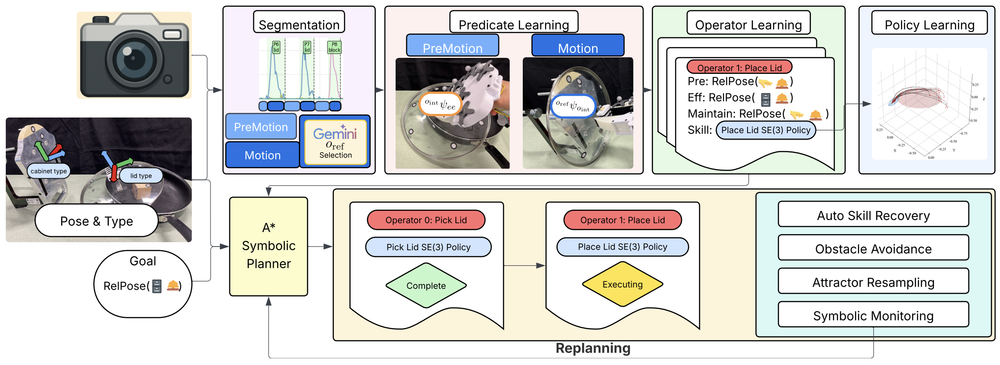
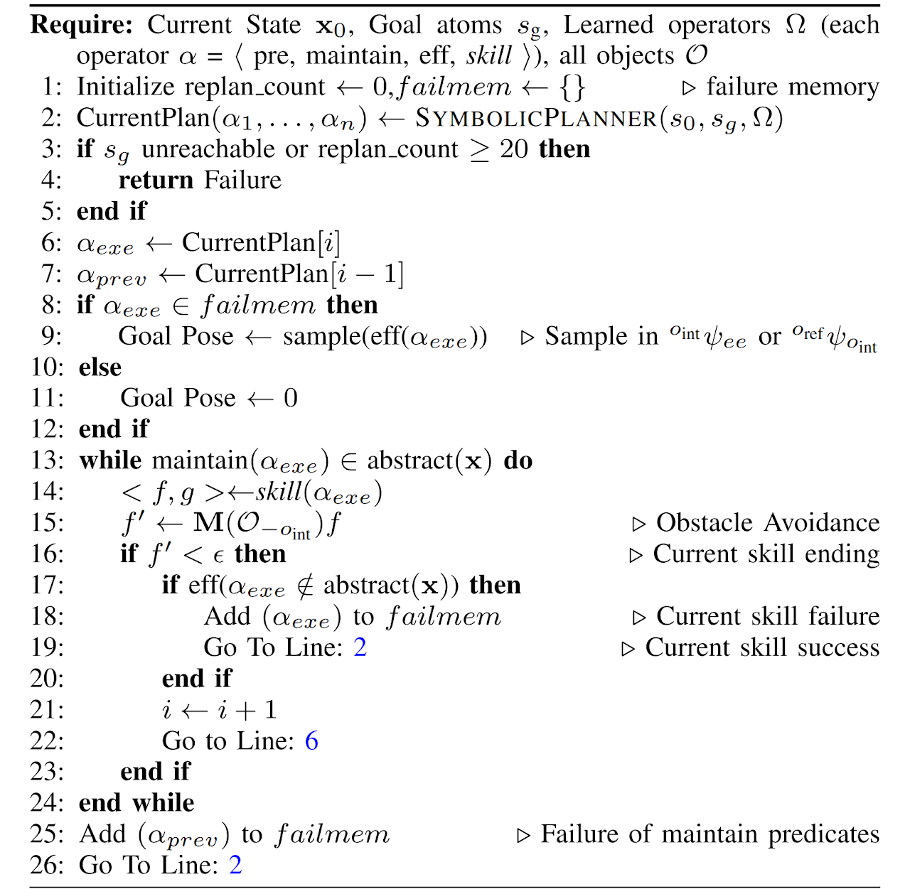

TL;DR
SymSkill jointly learns symbolic predicates, operators, and stable SE(3) DS skills from 5 min of unlabeled play demos, then plans symbolically to compose skills and recover from failures in real time on long‑horizon manipulation tasks.
Abstract
Multi-step manipulation in dynamic environments remains challenging. Imitation learning (IL) is reactive but lacks compositional generalization, since monolithic policies do not decide which skill to reuse when scenes change. Classical task-and-motion planning (TAMP) offers compositionality, but its high planning latency prevents real-time failure recovery. We introduce SymSkill, a unified framework that jointly learns predicates, operators, and skills from unlabeled, unsegmented demonstrations, combining compositional generalization with real-time recovery. Offline, SymSkill learns symbolic abstractions and goal-oriented skills directly from demonstrations. Online, given a conjunction of learned predicates, it uses a symbolic planner to compose and reorder skills to achieve symbolic goals while recovering from failures at both the motion and symbolic levels in real time. Coupled with a compliant controller, SymSkill supports safe execution under human and environmental disturbances. In RoboCasa simulation, SymSkill executes 12 single-step tasks with 85% success and composes them into multi-step plans without additional data. On a real Franka robot, it learns from 5 minutes of play data and performs 12-step tasks from goal specifications.
Method
Offline Co-Invention, Online Reactive Execution
Pipeline

Online Algorithm

Results
Composing Learned Operators and Skills
Simulation Experiment
Learning operators and skills from individual tasks, then combining them
SymSkill first learns reusable task structure from individual demonstrations, then composes the learned skills into longer symbolic plans without collecting new multi-step demonstrations.
Close Drawer
Pick and Place
Real Robot
Disturbance rejection and reactive obstacle avoidance using modulation at 1x speed
The controller and online symbolic execution loop allow the robot to remain responsive when the workspace changes during execution.
Real Robot
Demo with operator annotation at 1x speed
BibTeX
@misc{shao2025symskill,
title={SymSkill: Symbol and Skill Co-Invention for Data-Efficient and Reactive Long-Horizon Manipulation},
author={Shao, Yifei Simon and Zheng, Yuchen and Sun, Sunan and Chaudhari, Pratik and Kumar, Vijay and Figueroa, Nadia},
year={2025},
eprint={2510.01661},
archivePrefix={arXiv},
primaryClass={cs.RO},
url={https://arxiv.org/abs/2510.01661}
}